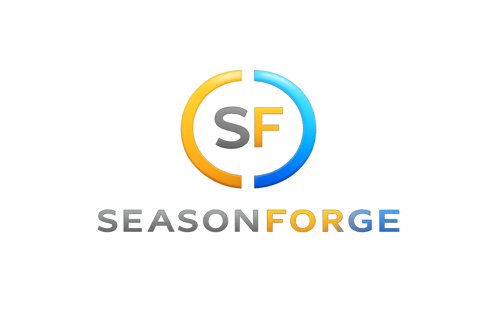

ACTIVE
Last Epoch
Current Season / League: Cycle 4: Shattered Omens
Source: 📰 Last Epoch Steam News • Eterra Monthly: June Edition 2026 published on July 1, 2026 at 07:02 PM • Read original ↗
Cycle 4: Shattered Omens
52days
6hours
34min
58sec
Developer
Eleventh Hour Games
More details →
🧭 KEY FEATURES & INNOVATIONS:
- ✓ Random encounters with Omens
- ✓ Rework of crafting and trade factions systems
- ✓ Second major expansion with new subclasses
- ✓ Expanded Monolith of Fate endgame content

• seasonforge.online